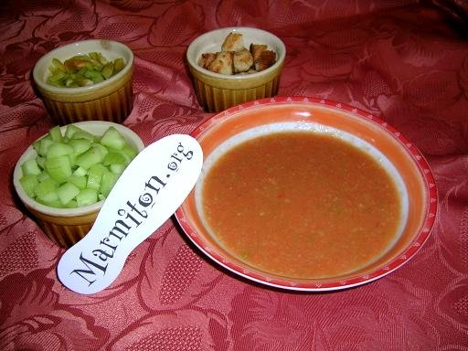

Gaspacho
Ingrédients
4×
- 1 grosse boîte de tomates
- 0.5 poivron vert
- 0.5 concombre
- 1 échalote
- 1 gousse d'ail
- 2 c. à s. d'huile d'olive
- 0.5 c. à c. de vinaigre balsamique
- tabasco
- 0.5 c. à c. de sucre
- sel
- poivre
- 15 cl d'eau

Préparation
Étape 1
Couper grossièrement et mixer ensemble 1 grosse boîte de tomates, 0.5 poivron vert, 0.5 concombre, 1 échalote, 1 gousse d'ail, 2 c. à s. d'huile d'olive, 0.5 c. à c. de vinaigre balsamique, tabasco, 0.5 c. à c. de sucre, sel, poivre et 15 cl d'eau.
Étape 2
Laisser refroidir le plus longtemps possible au réfrigérateur (ou 30min au congélateur si pressé).
Conseils
- Remplacer l’échalote par un très petit oignon, le tabasco par du piment de Cayenne.
Résumé
1 grosse boîte de tomates
0.5 poivron vert
0.5 concombre
1 échalote
1 gousse d'ail
2 c. à s. d'huile d'olive
0.5 c. à c. de vinaigre balsamique
tabasco
0.5 c. à c. de sucre
sel
poivre
15 cl d'eau
Couper grossièrement mixer
Laisser refroidir